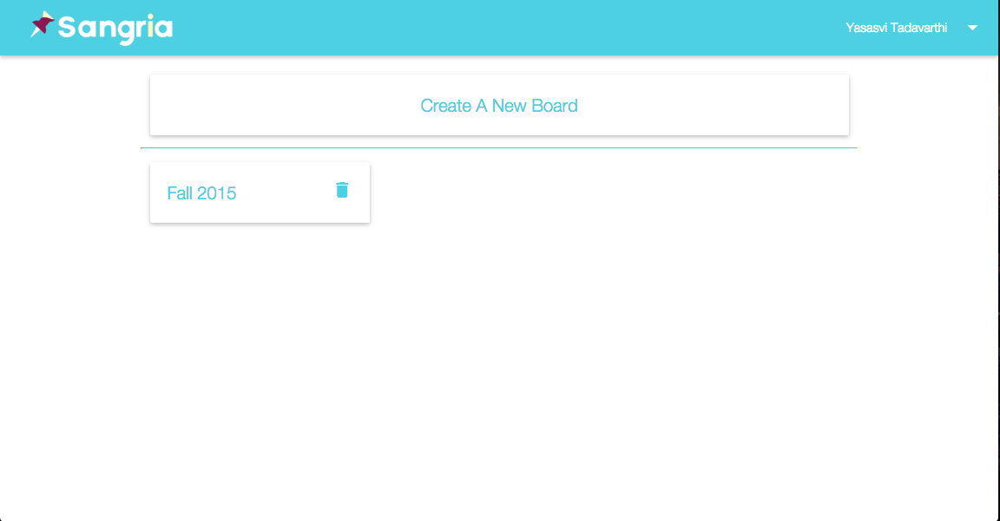
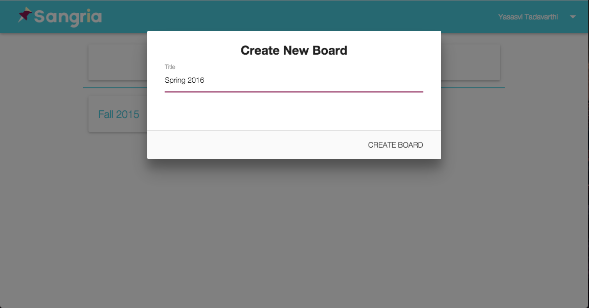
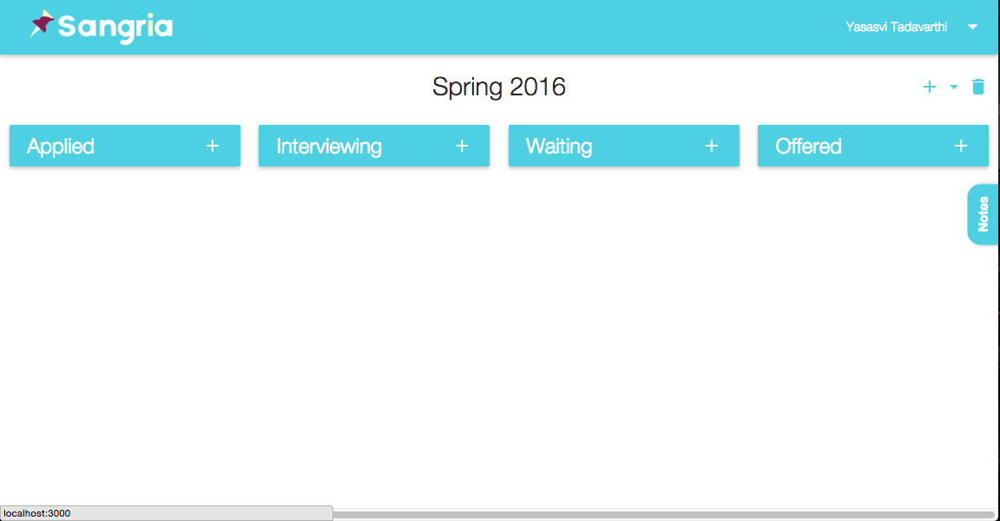
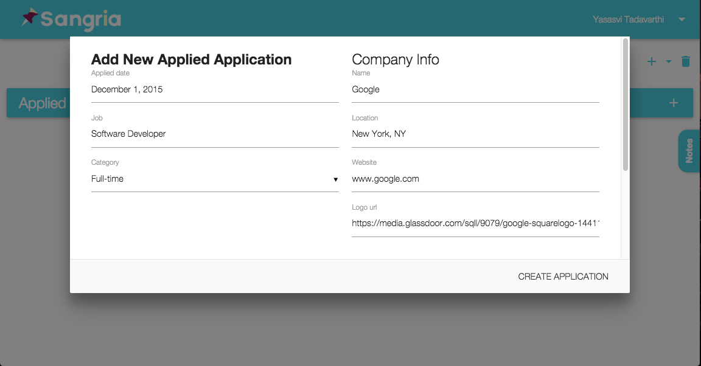
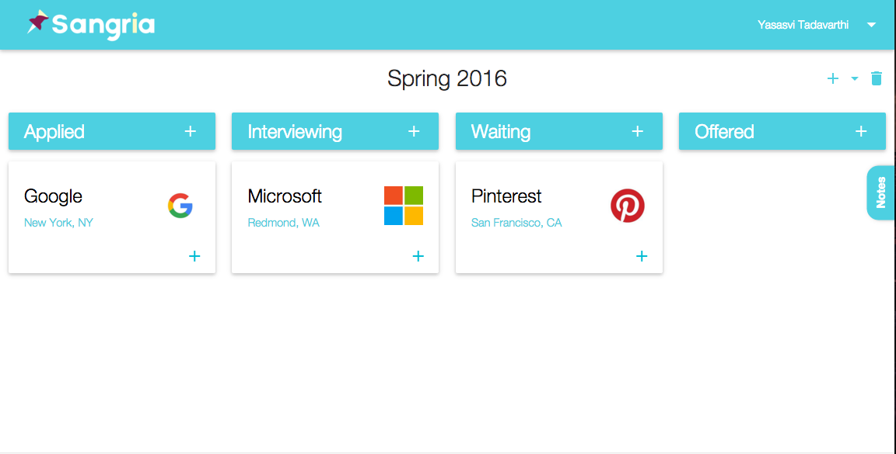
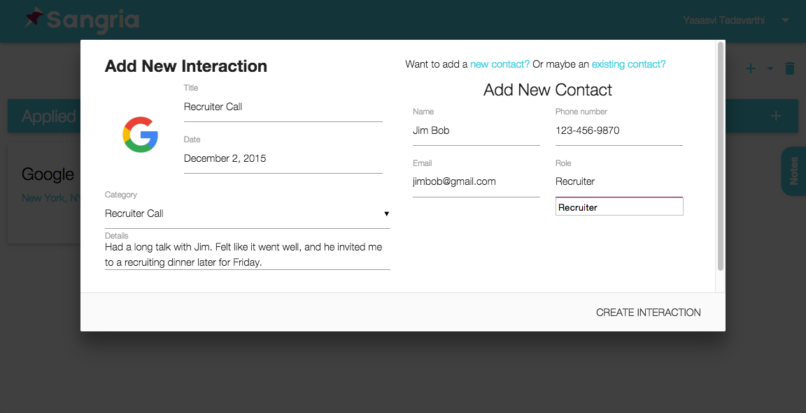
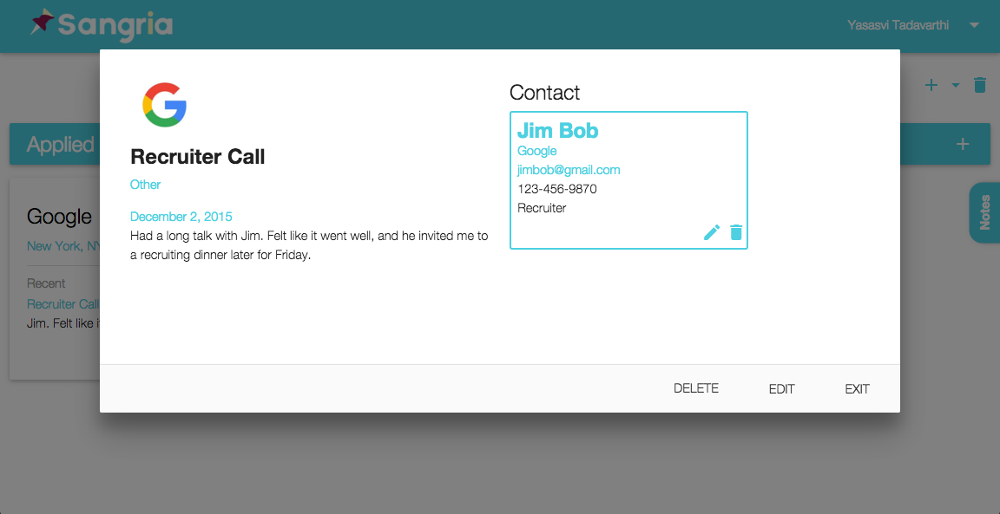
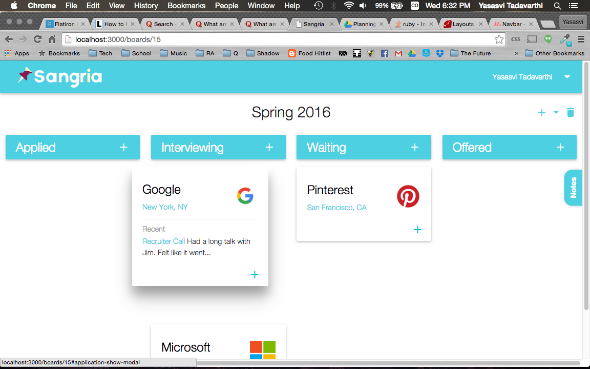
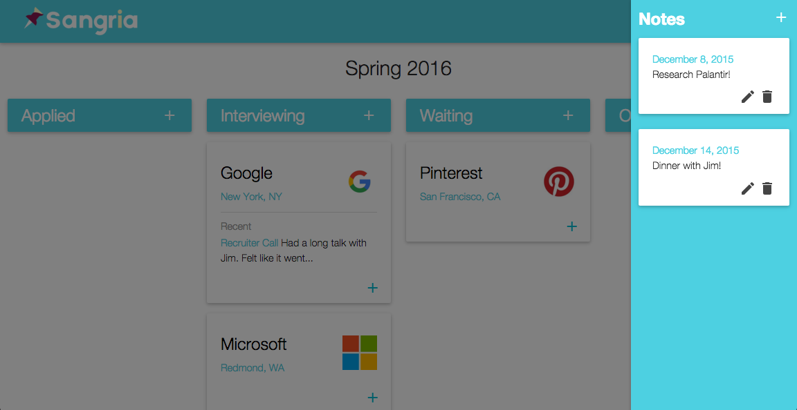

About Sangria.
Sangria was created with the job-searching applicant in mind. Finding the ideal job can be a daunting task for many students or professionals, as there are many steps in the application process and many minor details that can be easily overlooked when dealing with so many applications. Sangria helps you organize and track your job applications easily, from the initial creation of the application through each interview stage and finally to your acceptance, reminding you each step of the way so you don’t miss a beat. One awesome part about Sangria is that it is responsive to any screen size so you can use it on your laptop, tablet, or even smartphone!
Getting Started.
Sangria organizes your applications into ‘boards’. Each board corresponds to a certain application process, and has four main stages through which an application can be tracked (Applied, Interviewing, Waiting, Offered).
Create your own board and name it what you like!
From the main “boards” screen, you can click on the “+” on any of the columns to add an application to that current stage!
Here is the page where you can create a new application. Enter all of the pertinent information to the application here. Start typing in a company name, and Sangria will search Glassdoor to see if that company exists and auto-complete the rest of the information for you!
For each application, you can track ‘Interactions’ you’ve had with any contacts within the company, or any information in general. Sangria will help you keep notes about each interaction you’ve had and will remind you when you need to follow up. Click on the blue “+” sign to on the application to add a new interaction.
Enter all of the pertinent information to the interaction. Add it to a Contact if necessary!
Sangria knows that it can be hard to remember exactly what happened with each company, so on the main screen it will show you a snippet of the last ‘Interaction’. Click on it to find out more about the ‘Interaction’! These interactions can be edited later if necessary.
Once you have had an Interaction, Sangria automatically will send you email reminders after the date has passed to make sure you have followed up with that person! Once you hear back from a company about your status, updating your application is as easy as dragging the application to the next stage!
Sometimes you just need notes to keep yourself updated on what to do. Click on the Notes Tab on the right side of the page to add a note and get a quick view of all the notes you have!
Get accepted to your dream job!